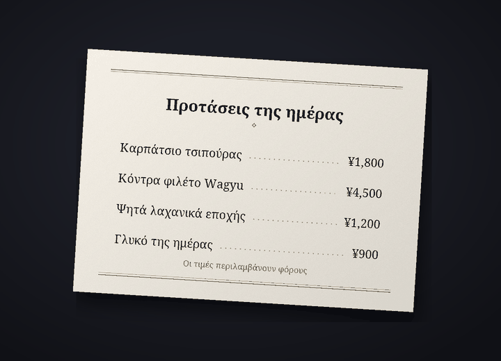

Bot μετάφρασης συνομιλιών στο Discord
Στο Discord ο καθένας μιλά στη γλώσσα του
Το Cozirom είναι ένα bot για το Discord που μεταφράζει τη συζήτηση στη γλώσσα του συνομιλητή. Μόλις το ενεργοποιήσεις, τα μηνύματά σου δημοσιεύονται μεταφρασμένα με το δικό σου όνομα και την εικόνα προφίλ σου, και μεταφράζεται και το κείμενο στις εικόνες.
Τις μεταφράσεις τις κάνει AI (το Claude της Anthropic). Μπορεί να κάνει λάθη, οπότε για κάτι σημαντικό έλεγξε και το πρωτότυπο.
Τι μπορεί να κάνει
Ένα bot μεταφράζει κείμενο, εικόνες και φωνή
Τα όρια των πλάνων μετριούνται σε μεταφράσεις. Ένα μήνυμα που μεταφράζεται σε μία γλώσσα είναι 1 μετάφραση.
6 λειτουργίες
Σε μεταφράσεις
Αυτόματη μετάφραση
Αρκεί να πληκτρολογήσεις μία φορά το
/μετάφραση ενεργοποίησηκαι τα μηνύματά σου σε αυτόν τον διακομιστή δημοσιεύονται στη γλώσσα του συνομιλητή, με το δικό σου όνομα και την εικόνα προφίλ σου. Το πρωτότυπο μένει κάτω από τη μετάφραση με μικρά γράμματα και το κουμπί δείχνει ολόκληρο το πρωτότυπο.
δείχνει ολόκληρο το πρωτότυπο.Μεταφράσεις1 ανά μήνυμα
Κείμενο σε εικόνες
Μενού, οθόνες παιχνιδιών, memes: αν μια εικόνα έχει κείμενο, διαβάζεται και μεταφράζεται. Η μετάφραση ανοίγει από το εικονίδιο
 κάτω από τις εικόνες όσων έχουν ενεργοποιήσει τη μετάφραση ή με μετάφραση μέσω δεξιού κλικ. Το αποτέλεσμα το βλέπει μόνο όποιος το ζήτησε και οι εικόνες χωρίς κείμενο δεν μετράνε.
κάτω από τις εικόνες όσων έχουν ενεργοποιήσει τη μετάφραση ή με μετάφραση μέσω δεξιού κλικ. Το αποτέλεσμα το βλέπει μόνο όποιος το ζήτησε και οι εικόνες χωρίς κείμενο δεν μετράνε.ΜεταφράσειςΣυνήθως περίπου 9 ανά εικόνα
Μετάφραση πάνω στην εικόνα
Από το εικονίδιο
 παίρνεις ένα αντίγραφο της εικόνας με το αρχικό κείμενο σβησμένο και τη μετάφραση γραμμένη στη θέση του. Στην αρχή η γραμματοσειρά είναι «Όπως το πρωτότυπο», κοντά στα αρχικά γράμματα, και μπορείς να αλλάζεις ανάμεσα σε έως 10 σετ γραμματοσειρών, όπως «Με πατούρες», «Χειρόγραφη» και «Κόμικ», χωρίς να μετράει. Ταιριάζει καλύτερα σε οριζόντιο κείμενο, όπως σε στιγμιότυπα οθόνης, memes, οθόνες παιχνιδιών και μενού, και το αποτέλεσμα το βλέπει μόνο όποιος πάτησε.
παίρνεις ένα αντίγραφο της εικόνας με το αρχικό κείμενο σβησμένο και τη μετάφραση γραμμένη στη θέση του. Στην αρχή η γραμματοσειρά είναι «Όπως το πρωτότυπο», κοντά στα αρχικά γράμματα, και μπορείς να αλλάζεις ανάμεσα σε έως 10 σετ γραμματοσειρών, όπως «Με πατούρες», «Χειρόγραφη» και «Κόμικ», χωρίς να μετράει. Ταιριάζει καλύτερα σε οριζόντιο κείμενο, όπως σε στιγμιότυπα οθόνης, memes, οθόνες παιχνιδιών και μενού, και το αποτέλεσμα το βλέπει μόνο όποιος πάτησε.ΜεταφράσειςΣυνήθως περίπου 19 ανά εικόνα


Παράδειγμα: η αρχική φωτογραφία (ένα μενού στα ιαπωνικά) και η ίδια φωτογραφία με το κείμενο σβησμένο και τη μετάφραση στα ελληνικά γραμμένη στη θέση του με τη γραμματοσειρά «Με πατούρες». Φωνητικά μηνύματα
Κάνε δεξί κλικ σε ένα φωνητικό μήνυμα που στάλθηκε από την εφαρμογή του κινητού για να δεις τι ειπώθηκε και τη μετάφρασή του. Απομαγνητοφωνούνται μηνύματα έως 3 λεπτά και τα μηνύματα χωρίς ομιλία δεν μετρούν.
Μεταφράσεις1 ανά δευτερόλεπτο, συν τη μετάφρασηΜήνυμα 10 δευτερολέπτων: συνήθως 11
Τέσσερα ύφη
Σλανγκ, χαλαρό, φιλικό ή επίσημο: το ύφος το διαλέγεις για κάθε διακομιστή. Στον ενικό με φίλους, στον πληθυντικό κάπου καινούργιο. Με το πλάνο Guest (δωρεάν) έχεις και τα τέσσερα τις πρώτες 14 ημέρες και μετά το φιλικό.
ΜεταφράσειςΕπί πληρωμή: και τα 4. Free: πρώτες 14 ημέρες
31 γλώσσες
Μεταφράζονται 31 γλώσσες. Οι οθόνες του bot και τα ονόματα των εντολών εμφανίζονται σε 30 γλώσσες του Discord, οπότε ο συνομιλητής κάνει τις ρυθμίσεις στη δική του γλώσσα.
Μεταφράσεις31 για μετάφραση, 30 για τις οθόνες

Πώς ξεκινάς
Τρία βήματα και η μετάφραση εμφανίζεται με το όνομά σου
Πρόσθεσε το bot στον διακομιστή
Ένας διαχειριστής του διακομιστή προσθέτει το bot στον διακομιστή. Ζήτα τον σύνδεσμο πρόσκλησης στον διακομιστή υποστήριξης.
Ενεργοποίησε τη μετάφραση
Όποιος θέλει να μεταφράζονται τα μηνύματά του πληκτρολογεί το
/μετάφραση ενεργοποίησησε αυτόν τον διακομιστή. Το bot μαντεύει τη γλώσσα σου και τη γλώσσα του συνομιλητή και ανοίγει τον πίνακα ρυθμίσεων. Αν κάτι δεν είναι σωστό, άλλαξέ το από τα αναπτυσσόμενα μενού.Γράφε όπως πάντα
Γράφε όπως πάντα και η μετάφραση εμφανίζεται με το όνομά σου. Ξεκίνα με το πλάνο Guest (δωρεάν) και άλλαξε πλάνο από τη σελίδα των πλάνων όταν χρειαστείς περισσότερα.
Απόρρητο
Τα μηνύματα προς μετάφραση και οι εικόνες στέλνονται μόνο στην Anthropic (ΗΠΑ) και ο ήχος των φωνητικών μηνυμάτων μόνο στη Google (ΗΠΑ). Το bot κρατά το πρωτότυπο μιας δημοσιευμένης μετάφρασης για 14 ημέρες και την προσωρινή μνήμη μεταφράσεων για 30 ημέρες, και δεν αποθηκεύει εικόνες, ήχο ή το κείμενο που προκύπτει από αυτά. Το περιεχόμενο των συζητήσεων δεν μπαίνει ποτέ σε αρχεία καταγραφής και με το /μετάφραση διαγραφή-δεδομένων διαγράφεις τα δεδομένα σου όποτε θέλεις.